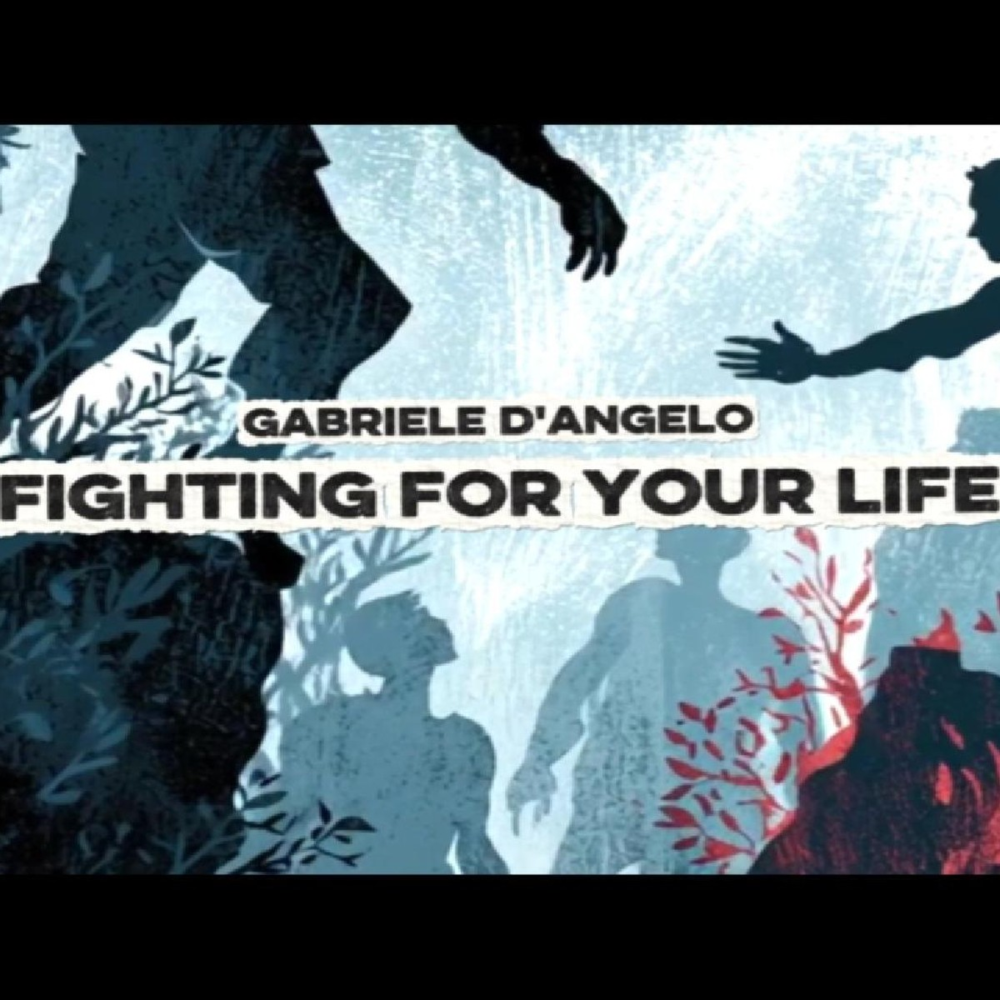
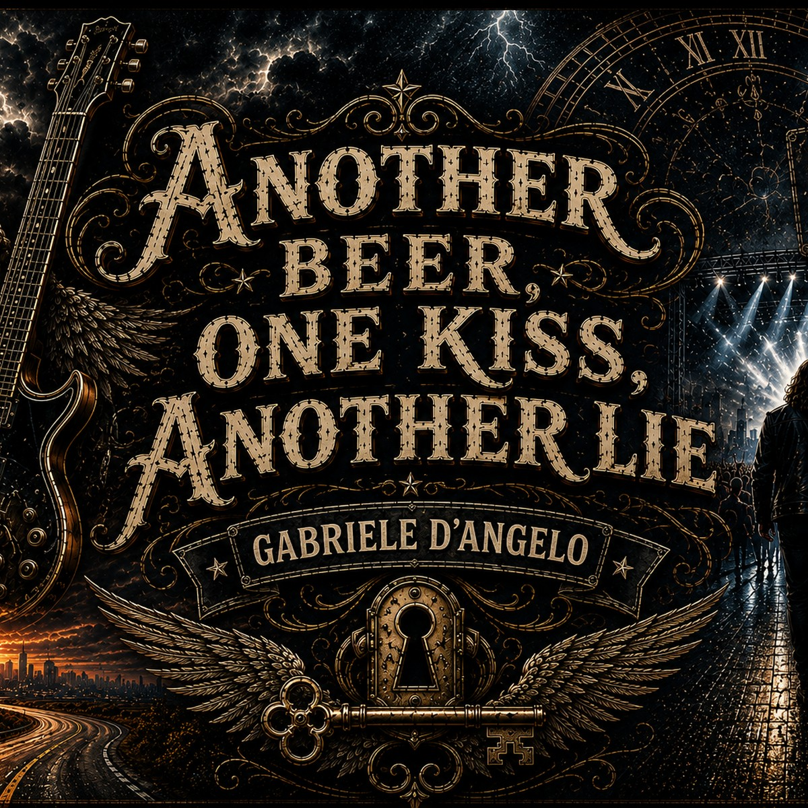
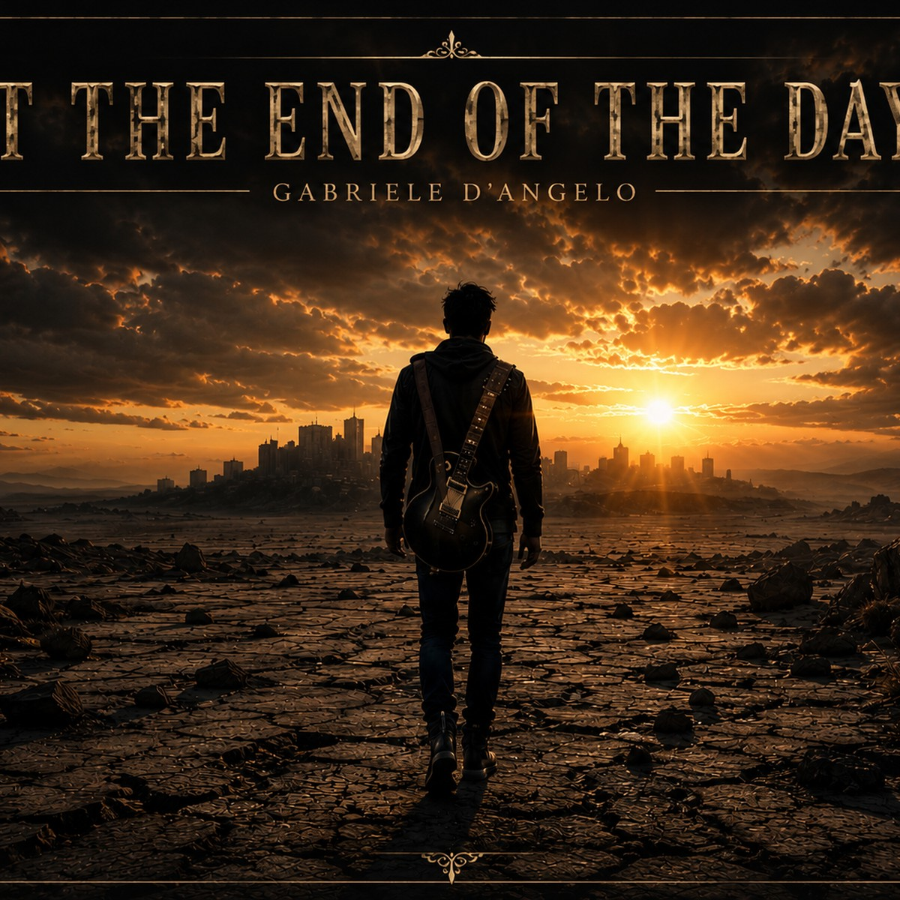

Gabriele D'Angelo
About
Projects
Stories
Contact
Original songs born
where silence was no longer enough.
Featured Songs

Fighting For Your Life

Another Beer, One Kiss, Another Lie

At the End of the Days